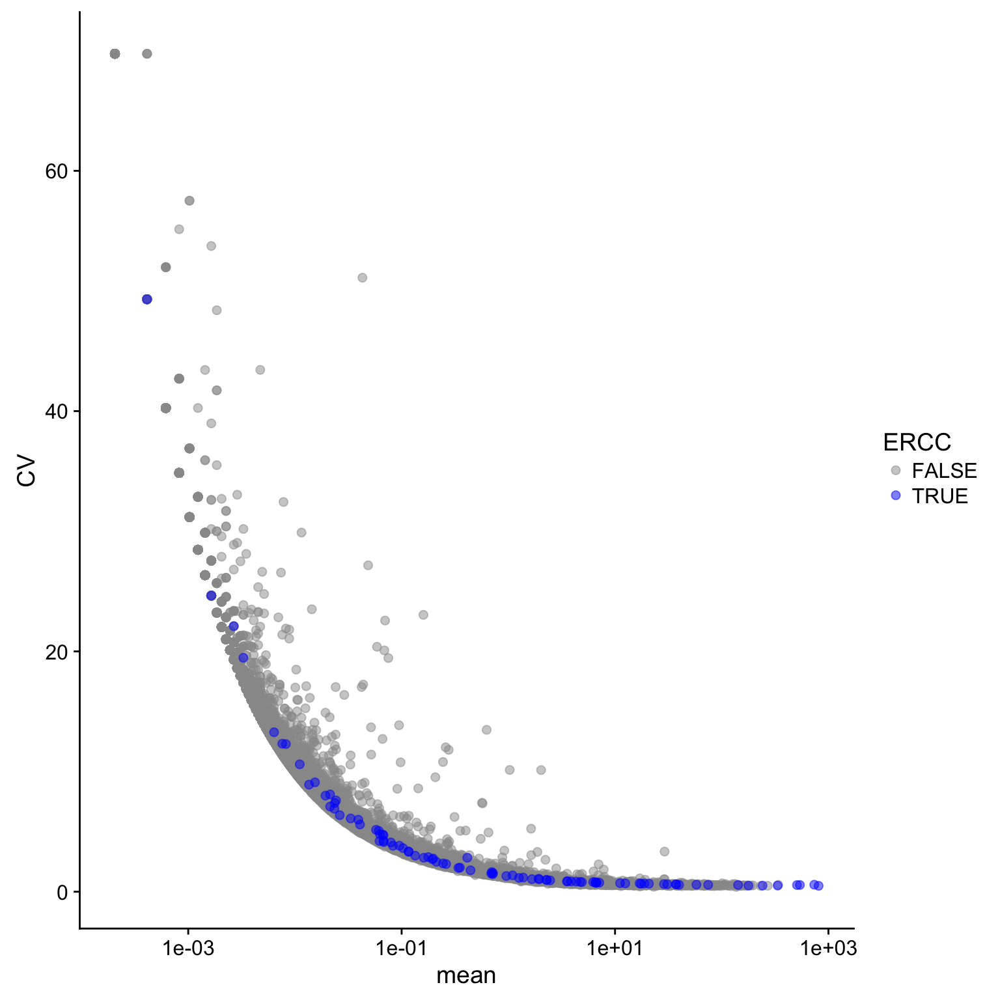
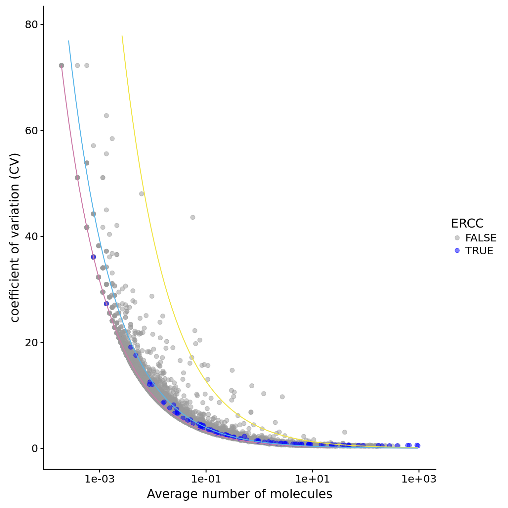

Last updated: 2018-02-18
Code version: bdc9784
library("cowplot")
library("edgeR")
library("ggplot2")
library("knitr")
theme_set(theme_cowplot())
source("../code/functions.R")
library("Biobase") # has to be loaded last to use `combine`Import data.
eset <- readRDS("../data/eset.rds")
dim(eset)Features Samples
54792 6432 Keep human genes and ERCC
eset <- eset[fData(eset)$source %in% c("H. sapiens", "ERCC") , ]
dim(eset) Features Samples
20419 6432 Only keep high-quality single cells.
quality <- read.table("../data/quality-single-cells.txt", stringsAsFactors = FALSE)
colnames(quality) <- c("sample", "quality")
eset <- eset[, quality$quality]
dim(eset)Features Samples
20419 5012 Remove zeros.
eset <- eset[rowSums(exprs(eset)) != 0, ]
dim(eset)Features Samples
19827 5012 First, we need to correct for collision probability.
eset_data <- exprs(eset)
eset_data_cr <- as.data.frame(-4^6*log(1-eset_data/4^6))
dim(eset_data_cr)[1] 19827 5012Calculate mean for each gene
eset_data_cr$mean <- apply(eset_data_cr, 1, function(x) mean(x,na.rm=TRUE) )Calculate CV for each gene
eset_data_cr$CV <- apply(eset_data_cr, 1, function(x) sd(x,na.rm=TRUE) )/ apply(eset_data_cr, 1, function(x) mean(x,na.rm=TRUE))Plot CV vs mean
## plot with color-blind-friendly palettes
cbPalette <- c("#999999", "#0000FF", "#56B4E9", "#009E73", "#F0E442", "#0072B2", "#D55E00", "#CC79A7")
## create a flag to ERCC
eset_data_cr$ERCC <- grepl("ERCC",rownames(eset_data_cr))
## plot
ggplot(eset_data_cr, aes(x = mean, y = CV, col = ERCC)) +
geom_point(size = 2, alpha = 0.5) +
scale_x_log10() +
scale_colour_manual(values=cbPalette)
Identification of noisy genes using the function created for the previous study
### this function will plot the mean vs cv based on the ERCC molecules counts
### only need to specify the input dataset
### the inpute dataset needs to have mean, cv and ERCC flag
### make minipar global
plot.cv.and.mean <- function(data.in){
# model based on ERCC only
# need to have a ERCC flag on the data.in
molecules_single_qc_expressed_ERCC <- data.in[data.in$ERCC,]
# compute the lossy factor based on ERCC
#### use LS: first define the function of f, then find the minimum
#### dont use the points from ERCC.mol.mean < 0.1 to fit.
ERCC.mol.mean <- molecules_single_qc_expressed_ERCC$mean
ERCC.mol.CV <- molecules_single_qc_expressed_ERCC$CV
# compute the sum of square errors
target.fun <- function(f){
sum((ERCC.mol.CV[ERCC.mol.mean>0.1]- sqrt(1/(f*ERCC.mol.mean[ERCC.mol.mean>0.1])))^2)
}
# find out the minimum
ans <- nlminb(0.05,target.fun,lower=0.0000001,upper=1)
minipar <- ans$par
# use the minimum to create the lossy poisson
lossy.posson <- function (x) {
1/sqrt((x)*minipar)
}
# defnine poisson function on a log x scale
poisson.c <- function (x) {
x^(-0.5)
}
# 4 s.d.
four.sd <- function (x) {
4*(x)^(0.5)/(x)
}
# 3.7 sd + 0.3
three.sd <- function (x) {
3.7*(x)^(0.5)/((x))+0.3
}
ggplot(data.in, aes(x = mean, y = CV, col = ERCC)) +
scale_x_log10() +
geom_point(size = 2, alpha = 0.5) +
stat_function(fun= poisson.c, col= "#CC79A7") +
stat_function(fun= four.sd, col= "#F0E442") +
stat_function(fun= lossy.posson, col= "#56B4E9") +
ylim(0, max(data.in$CV)*1.1) +
scale_colour_manual(values=cbPalette) +
xlab("Average number of molecules") +
ylab ("coefficient of variation (CV)")
}
plot.cv.and.mean(data.in=eset_data_cr)Warning: Removed 17 rows containing missing values (geom_path).Warning: Removed 2 rows containing missing values (geom_path).
### this function will identify the noisy gene based on 4 sd
### only need to specify the input dataset
### the inpute dataset needs to have mean and CV
noisy_gene <- function(data.in){
# larger than 4 sd
count.index <- (!is.na(data.in$mean))&(data.in$mean>1)
condi.index <- (data.in$CV > 4*(data.in$mean^(0.5))/data.in$mean)
sum(count.index&condi.index)
rownames(data.in)[count.index&condi.index]
}
# noisy genes of all sampels
noisy_gene_all <- noisy_gene(data.in=eset_data_cr)
noisy_gene_all [1] "ENSG00000002822" "ENSG00000005022" "ENSG00000008988"
[4] "ENSG00000034510" "ENSG00000062716" "ENSG00000070756"
[7] "ENSG00000071082" "ENSG00000074800" "ENSG00000075624"
[10] "ENSG00000079459" "ENSG00000080824" "ENSG00000083845"
[13] "ENSG00000084207" "ENSG00000087086" "ENSG00000089157"
[16] "ENSG00000092841" "ENSG00000096384" "ENSG00000100316"
[19] "ENSG00000105372" "ENSG00000108298" "ENSG00000108518"
[22] "ENSG00000108821" "ENSG00000109971" "ENSG00000110700"
[25] "ENSG00000110713" "ENSG00000111640" "ENSG00000111716"
[28] "ENSG00000112306" "ENSG00000114391" "ENSG00000115541"
[31] "ENSG00000117450" "ENSG00000118181" "ENSG00000119705"
[34] "ENSG00000120437" "ENSG00000122406" "ENSG00000123416"
[37] "ENSG00000124614" "ENSG00000124762" "ENSG00000124766"
[40] "ENSG00000125144" "ENSG00000125691" "ENSG00000125743"
[43] "ENSG00000127184" "ENSG00000130255" "ENSG00000131469"
[46] "ENSG00000131969" "ENSG00000132341" "ENSG00000132475"
[49] "ENSG00000136810" "ENSG00000136942" "ENSG00000137154"
[52] "ENSG00000137818" "ENSG00000138326" "ENSG00000140264"
[55] "ENSG00000142534" "ENSG00000142541" "ENSG00000143947"
[58] "ENSG00000143977" "ENSG00000144713" "ENSG00000145592"
[61] "ENSG00000149273" "ENSG00000149591" "ENSG00000149925"
[64] "ENSG00000156482" "ENSG00000156508" "ENSG00000161016"
[67] "ENSG00000162244" "ENSG00000164032" "ENSG00000164587"
[70] "ENSG00000166441" "ENSG00000166681" "ENSG00000167088"
[73] "ENSG00000167526" "ENSG00000167996" "ENSG00000168653"
[76] "ENSG00000169020" "ENSG00000170315" "ENSG00000172809"
[79] "ENSG00000174748" "ENSG00000175063" "ENSG00000177105"
[82] "ENSG00000177600" "ENSG00000177954" "ENSG00000181163"
[85] "ENSG00000182481" "ENSG00000182899" "ENSG00000184009"
[88] "ENSG00000185885" "ENSG00000186468" "ENSG00000187193"
[91] "ENSG00000189043" "ENSG00000189403" "ENSG00000196230"
[94] "ENSG00000196262" "ENSG00000196531" "ENSG00000197061"
[97] "ENSG00000197756" "ENSG00000198518" "ENSG00000198712"
[100] "ENSG00000198727" "ENSG00000198763" "ENSG00000198786"
[103] "ENSG00000198804" "ENSG00000198886" "ENSG00000198888"
[106] "ENSG00000198899" "ENSG00000198938" "ENSG00000204628"
[109] "ENSG00000205358" "ENSG00000212907" "ENSG00000213741"
[112] "ENSG00000228253" "ENSG00000231500" "ENSG00000240972"
[115] "ENSG00000255823" "ERCC-00002" "ERCC-00003"
[118] "ERCC-00004" "ERCC-00009" "ERCC-00046"
[121] "ERCC-00074" "ERCC-00096" "ERCC-00108"
[124] "ERCC-00113" "ERCC-00130" "ERCC-00136"
[127] "ERCC-00171" This R Markdown site was created with workflowr